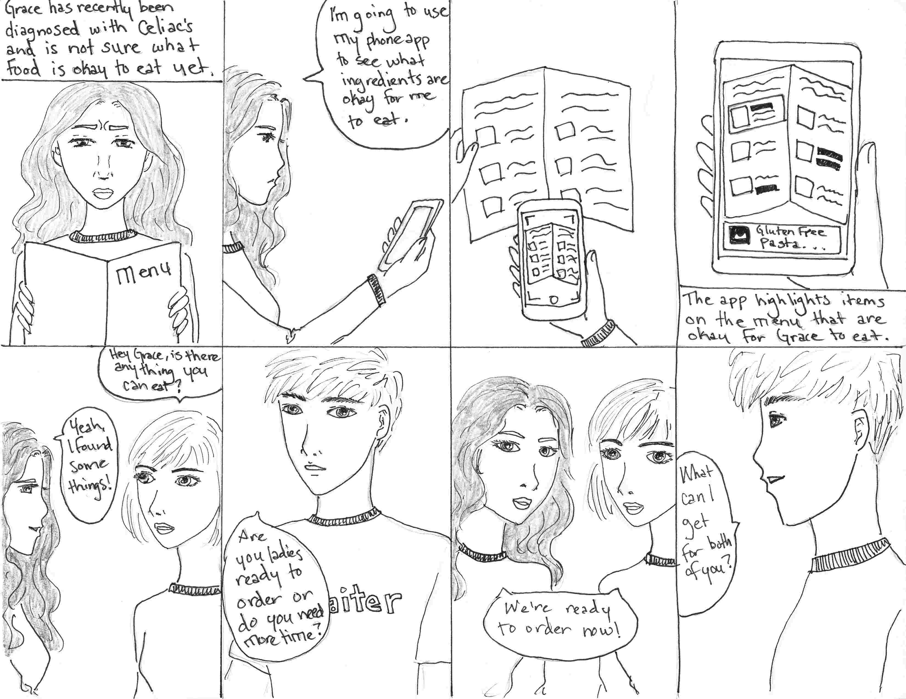
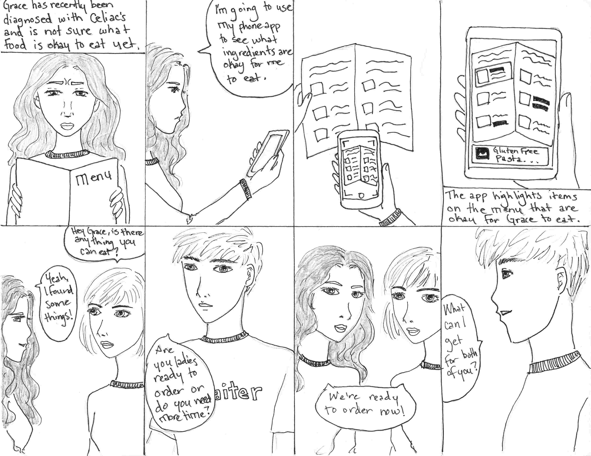

Infograin
Helping students with dietary restrictions make informed meal decisions when dining out.
Role: UX Research, UX Design, Prototyping

Helping students with dietary restrictions make informed meal decisions when dining out.
Role: UX Research, UX Design, Prototyping

We started with determining the user group and finding the problem space. At the beginning, we defined the users as 'students with dietary restrictions' and the problem space as 'grocery shopping.' We conducted observations, interviews, and created surveys to gather more data regarding their experiences. Although students do have trouble navigating a grocery store on their first few visits, after the first few times they become accustome to the store and no longer require assistance. We found that students already have a set of methods and practices they use for finding food items that meet their dietary needs.
Our initial assumption needed to be tweaked.
We found a burgeoning trend from our data that students face more frustrations when trying to
decide where to go out to eat and discovering what food items meet their dietary needs at restaurants.
We made a decision to pivot our problem space to
restaurant going instead of grocery shopping.
By doing an affinity map, we were able to extract key pain points:
A brainstorm session was conducted keeping in mind the different issue areas which we identified from the affinity mapping.
This session helped us think of many different ideas which we then plotted on a Feasibility-Creative Scale.
We wanted to further understand our users so that we could decide what, specifically, they would make use of in our solution. We created three personas, one each for vegan, vegetarian, and gluten free. For each persona, we defined their characteristics, challenges they face with their dietary restrictions and goals when eating out.
Personas from left to right: Vikki, Vishnu, Grace
We created empathy maps to visualize emotional journeys using the scenarios inspired by existing problems identified within our user interviews and by looking at personas.
Empathy maps from left to right: Vikki, Vishnu, Grace
We used storyboards to represent scenarios our personas were likely to face and to show how our design ideas would resolve some of these problems. Using the empathy maps as a guide, we created a storyboard for each persona.
 

Storyboards from left to right: Vikki, Vishnu, Grace
While working on the storyboards, we started sketching up low fidelity mockups for three different solutions: a QR code app, AR app, and a kiosk. We then made wireframes to develop our ideas further.


We conducted six feedback sessions with users to see which design we should move forward with. We asked them to answer the following questions:
After going through all the feedback we received, we sat down together and decided on which features to keep, which to discard, and how we were going to consolidate these features into one main deliverable.
Map
QR
GPS
AR
Restrictions
Kiosk
Restaurant Sorting
Profile
Compatibility Score
Multiple Users
Menu
Menu Categories
Menu Legends
Customer Reviews
Sorting Reviews
Customer Feedback
We created mid fidelity prototypes without color and asked a user to review or app to help us understand on a higher level what the user perceived from each screen. This feedback session consisted of only one question: "What do you understand from this screen and how do you perceive the information?"
This resulted in two main findings:
1. The way the app represented the dietary restriction needed revamping as the categorization was confusing for the user.
Infograin Version 1
Infograin Version 2
2. The legends on the menu page were not comprehensible to the user and the user felt that the legends provided were for the whole restaurant till they saw the expanded menu categorization. This made us change the design from all collapsed categories when the user first navigates to the menu page, to having the first category expanded by default so that the user could make sense of the legends. We also changed the text for the legends to make it more descriptive and easier for the user to understand. (See figure below)
Infograin Version 1
Infograin Version 2
After coming up with our basic screens, we came together again to talk about the color scheme for our app. In talking about the "personality", or feel, for our app (described above), we decided that we wanted to go with a mentor sort of feel – friendly and approachable, but also in a position of authority. We want people to be comfortable using the app, but we also want them to trust it. We kept this in mind as we picked the color scheme. Ultimately, we decided on purple and yellow, with variations on these shades of purple and yellow being determined by Google's material design palettes.
Splash Screen with Logo
Location Permissions
Dietary Restrictions
Lacto-Ovo Vegetarian Selected
Map of Restaurants
Map Sort Options
Menu Collapsed Toggle On
Salad Expanded Toggle On
Salad Expanded Toggle Off
Reviews by Customers
Reviews Sort by Newest First
Reviews Sort by Dietary Restriction

Restaurant Feedback Notification
Feedback Form
Feedback Form Filled Out
Pick a restaurant in this area where you would like to eat, keeping your dietary restriction in mind.
For this task, you only have the maps view available to you and you cannot drill down and click on the restaurant to view their menu.
We chose this task because we wanted to see what users considered when choosing a restaurant when they only had the option to look at the maps view. We were interested in how people made the decision of what restaurant to go to, independent of what was on the menu. In particular, we were interested in the relative priority of each bit of information to the user – how interested were they in the rating, price, and distance of each restaurant?
Pick a dish from a given restaurant.
You are going with a friend who does not have any dietary restriction and you need to pick a dish for them as well.
We chose this task to evaluate the other primary feature of our app: the menu. Designating a restaurant for them and forcing them to choose was partly an artifact of the fidelity of our prototype, but we believe it is also a relatively realistic task. Our research throughout this project has indicated that people with dietary restrictions often have to go to a restaurant that someone else chooses when they're out with friends, coworkers, or family.

The approach we took when starting on Infograin was based on the user centered design process, where you first research the problem space, ideate and design, prototype, evaluate and test then iterate again and again. This method argues that this is always a formative process and it never reaches the summative process, because the solution can always be improved upon.
Although Infograin was only a semester long project, there were definitly many aspects to our design that could be changed. Given more time to work, we would want to implement the following features:
This project taught me a lot about designing with the user in mind and the user centered process.
I learned that going into the project, there were a lot of assumptions my team and I made regarding what the user would understand and how they would interact with the prototype. While it is important to listen to users, especially when it comes down to an element that is confusing or is not easily intuitive, it is equally as important to NOT develop a system that gives the user everything they want.
Not only is it impossible to cater to all the demands that every single user wants, one should not try. Rather, it is better to rely on the data and the trends revealed to inform the design process.
Fail, and fail often. While we were only able to through the iteration process a couple of times from the low fidelity mockups to the final prototype, if given time, it is better to rapidly prototype, test and iterate and do this repeatedly. This helps the team discover what works and what doesn't faster.